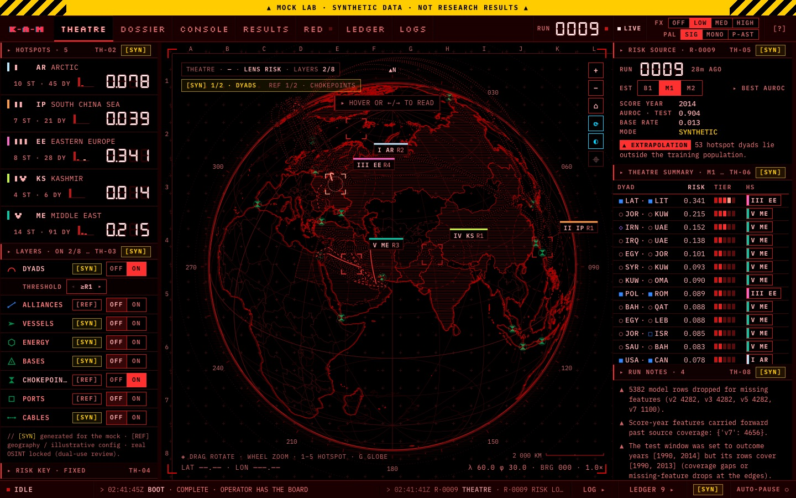

KARAMBINNING_
I study conflict, security and the international order. With Claude as my main tool, I build applications, software and small-scale infrastructure. Everything here was built since March 2026, alongside the degree, with no programming background.
[ MARCH TO NOW ]
-
Mar 2026
First line of code
A humanities student who had never programmed opens Claude and builds an AI analyst for live prediction-market data. Within days it becomes KAM, the platform everything since is built around.
- First Claude session, after a year on ChatGPT, without ever having written a line of code
- First build: an in-browser AI analyst for live Polymarket data
- 9 March: the first commit of KAM, a local-first terminal that unifies the world, knowledge and AI in one place
- A planetary-intelligence globe and a multi-model AI council follow within weeks
- The War Room conceived: a seven-agent trading team, tested on paper and with small live stakes
-
Apr 2026
A security scare, turned into a curriculum
A suspected security incident on my machines turned out to be a false alarm. Working out how to check properly taught me how little I knew about defending my own setup, so I turned it into a structured cybersecurity curriculum, built into my dashboard and practised against my own machines. The same month I submitted my research design, built around KAM.
- Set up decoy services and a tamper-evident access log to see what was really happening
- Learned to read the logs properly; the evidence showed a false alarm
- Built Sentinel, a security agent that watches each machine against a baseline and alerts on changes
- Wrote the curriculum: threat landscape, network defence, incident response, offensive testing, critical infrastructure, AI in cyber, and cyber geopolitics
- Based on public frameworks such as NIST and MITRE ATT&CK, and practised hands-on against my own machines only
- It later grew into Future Warfare, a wider curriculum on modern conflict
- Submitted my research design, which made KAM the instrument for studying civilian access to geopolitical and security analysis
-
May–Jun 2026
A small, semi-autonomous agent fleet
I built a small fleet of semi-autonomous agents to help run the systems I had made. They take tasks, do the work and report back, but they are not left to run on their own: an independent reviewer checks the work, and anything that leaves the machine waits for me. Alongside it, the summer brought more tools for study, work and outreach.
- May: the agent fleet consolidated under one director, which takes tasks and reports what it did
- Agents with clear roles and an independent reviewer; anything that only looked alive was shown as failing
- June: London Tech Week at Olympia, on a general ticket, to learn rather than pitch: sessions, field notes and about fifteen conversations
- Mission OS: a reusable app for running missions, with its own analyst. London Tech Week was the first mission: research, planning and outreach in one place
- The trading data packaged as a research dataset, and THEMIS, a cautious legal-research agent
- My own AI academy: a learning path through Anthropic's courses, papers and code, then an AI-engineering track with a tutor
- Anthropic Academy: three AI Fluency courses
-
Jul 2026 – now
The estate comes together
Over the summer the separate pieces became one estate: computers and servers set up with clear roles, the agents and apps running across them, and one canonical archive underneath. It is my agentic infrastructure. Then the final year began.
- July: ICARUS flies for the first time, inside a safety envelope it cannot leave; a simulator follows the next day
- A learning suite in my Work app: a French tutor with spaced repetition and role-play, mastery courses in maths, physics and economics, a lab notebook, a reading room and a lecture companion
- The intelligence engine audited and made queryable by my director agent
- September: one canonical vault with written rules and a checker; Sentinel watching every machine
- Autumn: K·A·M RIDE for my bike rides and K·A·M Notch for my laptop
- Final year: a dissertation on great-power war as a process, with its own forecasting lab
[ THE WORK ]_
> ls ~/work · select one to open its terminalThe estate
Four Macs on a private mesh and the apps they run. Select a machine.
The agents
Agents run as Claude Code sessions: a director that splits the goal, a scout, a builder, a reviewer and an archivist, with a security agent watching every machine. A deterministic supervisor probes every node every sixty seconds and restarts what has failed.
- No agent may mark its own work complete; an independent reviewer decides
- Failures are kept on the record: 1,054 tasks passed and 91 failed
- Nothing sends externally, moves money or writes to the vault without my approval
- Sentinel, born from April, baselines each machine and alerts on any change
The proposal
How can an AI-assisted OSINT platform provide expert geopolitical and security capabilities, through human-machine teaming, to the civilian across both peacetime and conflict?
My second-year research proposal. It argues that no open-source intelligence platform gives a civilian one unified system for geopolitical and security analysis, and that a shift to a multipolar order makes that gap matter. KAM is the designed instrument: the proposal assesses its NEWS, WORLD, SIGNAL and COUNCIL modules against the academic literature, then uses what it finds to improve them.
- Method: design-based research, iterating the platform against the literature rather than writing about it at a distance
- Four literatures: OSINT methodology, war studies and historical context, AI and human-machine teaming, and information resilience in conflict
- Sub-questions: how OSINT democratises intelligence capability, how human-machine teaming augments rather than replaces judgement, and the ethics of a civilian intelligence platform
- Ethics: source bias, dual use and the security of the user, addressed in the proposal itself
- AI use declared on its first page: what Claude was used for, and what was mine
The dissertation
Great Power War as a Process: what structural indicators of systemic conflict can, and cannot, predict.
Major war read as a long structural process rather than a dated event. A systemic tier measures the condition of the international system from 1816 to 2022 against the build-ups to 1914 and 1939, without attaching a probability. A dyadic tier asks whether a pair of states will start a militarised dispute the following year, trained on 1816–1989 and tested on 1990–2014, split by time and never at random.
Every result reports base rate, AUROC, AUPR and Brier score together, against honest baselines, because predicting "no war" is almost always right, so accuracy rewards silence. Next year: a master's in International Security.

The lab I built for the dissertation, shown here on synthetic data. Nothing on screen is a research result.
Get in touch_
Open to internships for winter 2026/27 and summer 2027. Type a message into the terminal and it goes straight to my university inbox.
K.S.Binning1-24@student.lboro.ac.uk